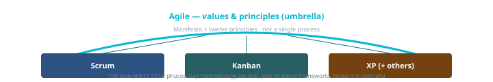

Agile (umbrella)
Values and principles (Manifesto)—not a single process. Frameworks (Scrum, Kanban, XP) operationalize Agile in different ways; teams often blend. Canonical: agile.md.
Values & principles
- Manifesto (2001): individuals & interactions, working software, customer collaboration, responding to change—over the items on the right (still valued).
- Twelve principles expand delivery, feedback, and sustainable pace—see agilemanifesto.org/principles.html.
- This blueprint: Phases A–F stay methodology-neutral; Agile informs how you run them.
Umbrella over frameworks

flowchart TB
AG[Agile values / principles]
AG --> SC[Scrum cadence]
AG --> KB[Kanban flow]
AG --> XP[XP practices]
SC -.-> BL[Common blends]
KB -.-> BL
XP -.-> BL
Mermaid is schematic—your org chart and tooling live in project docs.
Choosing a primary rhythm
| If you need… | Often start with… |
|---|---|
| Fixed iterations, regular stakeholder demos | Scrum |
| Continuous flow, variable intake | Kanban |
| Strong engineering discipline (TDD, CI, pairing) | XP + Scrum or Kanban |
| Formal gates, baselines, regulated evidence | Phased delivery or hybrid |
In this blueprint
- Roles: Archetypes — name who holds Demand, Build, Flow, Assure, Steer even when blending.
- Ceremonies: C1–C6 intents + methodology forks—same intent, different ritual names.
- Agentic: Agentic SDLC layers on automation without replacing human acceptance.
Authoritative sources
Each entry: what it is and why this blueprint links to it.
- Agile ManifestoOriginal four values—defines Agile before you choose a framework.
- Twelve PrinciplesDelivery, feedback, sustainability.
- Agile AllianceHub, glossary, community context.
- Scrum.org — What is Scrum?Common framework under Agile values.
- Agile Alliance — Subway mapPractice landscape; orientation, not a mandated workflow.
Canonical source
Full narrative: agile.md.